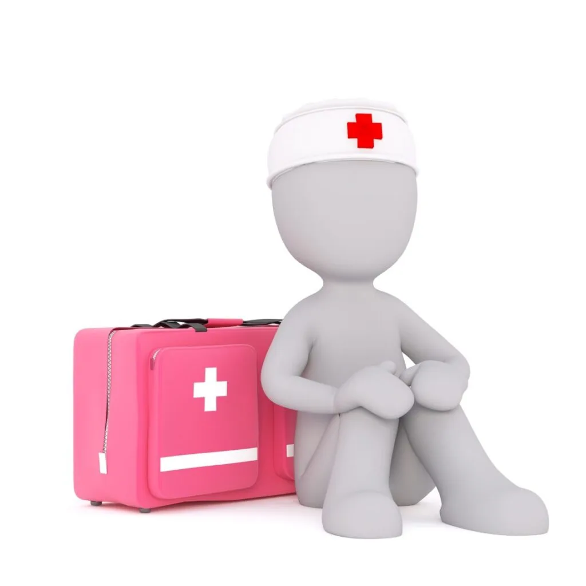

Expanded Nursing Uganda Explanation
First aid in medical emergencies should be reviewed through safe maternal and newborn assessment, early recognition of danger signs, respectful communication and timely referral. Connect the definition to vital signs, bleeding, fetal or newborn wellbeing, patient education and local protocol requirements.
01 First Aid Medical Emergencies.
First aid is a crucial skill that everyone should possess, as it enables individuals to provide immediate care and assistance to someone who has been injured or is experiencing a medical emergency.
There are various medical emergencies that require prompt first aid intervention. Some of the most common ones include:
02 **DROWNING**
Drowning is defined as the process of experiencing respiratory impairment due to being submerged or immersed in water.
It occurs when the airway is blocked, preventing the person from breathing properly and leading to oxygen deprivation.
Drowning can result into death from hypothermia due to immersion in cold water, sudden cardiac arrest due to spasm of the throat blocking the air way or inhalation of water and consequent air way obstruction.
CAUSES OF DROWNING
- Lack of swimming ability : Inability to swim or lack of proper swimming skills increases the risk of drowning, especially in situations where individuals find themselves unexpectedly in water.
- Absence of barriers : Insufficient barriers, such as pool fences or lifeguards, can lead to unsupervised access to water bodies, putting individuals, especially children, at higher risk of drowning.
- Alcohol consumption : Alcohol impairs judgment, coordination, and reaction time, increasing the likelihood of accidents and drowning incidents in water-related activities.
- Seizures or medical conditions: Individuals with conditions like epilepsy or seizure disorders face a higher risk of drowning if an episode occurs while they are near water.
- Lack of supervision : Insufficient adult supervision, particularly for children and inexperienced swimmers, can lead to tragic outcomes when accidents happen in or near water.
- Fatigue : Especially when a person has been swimming for too long and gets too tired to continue.
If this person is not rescued as early as possible, accidental death will result.
SIGNS AND SYMPTOMS
- Difficulty in breathing
- Noisy breathing
- Water comes out from the mouth and the nose.
- Distended abdomen
- Cyanosis
- Confusion
- Rapid pulse
- Unconsciousness
- Fits may occur
- Breathing may stop.
FIRST AID MANAGEMENT :
Aims of Management
- To restore adequate breathing.
- To keep the casualty warm.
- To arrange for urgent transport to hospital.
(a) REACHING A VICTIM
- Pull the victim from the water using a rope, a branch of a tree, a stick, a shirt etc.
- Lie down flat on your stomach and extend your hand or leg to the victim.
- Throw him an object that will float for example a tire, a log, plastic toes, cautions etc.
- Make sure that your own position is safe to rescue to the victim.
- You can also use a boat and a life jacket if available and swim or tow the casualty to shore or bank.
(b) WHEN THE CASUALTY HAS REACHED THE SHORE
- Help him lie down a coat, or a rug or any piece of cloth with his head lower than the rest of the body so that the water can drain easily from the mouth and nose. This reduces the risk of inhaling water.
- Treat the casualty for hypothermia, remove wet clothing and replace with dry ones if possible and cover him with dry blanket or any piece of cloth.
- If the casualty is fully conscious, give him a warm drink if available.
- If the casualty is unconscious, open the air way, check the breathing and if not breathing , initiate cardiopulmonary resuscitation. (CPR)
- Give five (5) initial rescue breaths before you start chest compressions.
- Call for emergency help even if the casualty appears to have recovered fully because of the risk of secondary drowning.
- Any water entering lungs causes them to become irritated and the air passages may begin to swell several hours later this condition is known as secondary drowning.
- Monitor and record vital signs such as level of response, breath and pulse until help arrives.
PREVENTING DROWNING
- Learn to swim: Acquiring swimming skills and encouraging others, especially children, to learn how to swim significantly reduces the risk of drowning.
- Constant supervision: Ensure active and serious supervision when individuals, especially children, are in or near water. Avoid distractions like phones or other activities that may take away attention.
- Use appropriate barriers : Install and maintain proper barriers like pool fences, covers, or gates to restrict access to water bodies and prevent unsupervised entry. Pool nets to cover pools are helpful too when having children around.
- Wear life jackets : In situations where swimming ability is limited or uncertain, wearing properly fitted life jackets can be essential and increase safety.
03 **BURNS AND SCALDS:**
BURNS: Are tissue injuries caused by dry heat, extreme cold corrosive substances, friction or radiation. Or: Is the destruction of the body surface by dry heat.
SCALDS: Are tissue injuries caused by wet heat from hot liquids and vapor.
TYPES OF BURNS:
(a) DRY BURNS: Dry burns occur when the skin comes into direct contact with a dry heat source. Examples of dry heat sources include flames, hot objects, or heated surfaces such as stoves, flat iron.
COMMON CAUSES
- Contact with hot object
- Friction
- Flames
(b) ELECTRICAL BURNS: Electrical burns occur when the body comes into contact with an electrical current. These burns can result from accidents involving faulty electrical appliances, exposed wiring, lightning strikes, or high-voltage power lines.
COMMON CAUSES
- High voltage current
- Lightening
(c) CHEMICAL BURNS: Chemical burns occur when the skin or eyes come into contact with corrosive or harmful chemicals. Chemical burns can result from contact with acids, alkalis, solvents, cleaning agents, or industrial chemicals.
COMMON CAUSES
- Industrial chemicals including inhaled fumes and corrosive gases, domestic chemicals and agents. For example paint, pesticides, bleaching agents or any other strong acid or alkaline chemical.
(d) RADIATION BURNS: These are caused by over exposure to ultraviolet rays from the sun, exposure to radioactive sources such as x – rays.
(e) COLD INJURY: Cold burns, also known as frostbite, occur when the skin and underlying tissues are exposed to extreme cold temperatures. Cold burns can result from direct contact with extremely cold objects, exposure to freezing temperatures, or prolonged exposure to cold, contact with freezing vapor such as oxygen or nitrogen. Frostbite can cause the affected areas to become numb, pale, and firm to the touch. ****
PEOPLE AT RISK OF BURNS
- Children mostly under five years of age.
- Elderly.
- Those with medical related conditions like seizure due to epilepsy, diabetes, leprosy, and albinism.
- Alcoholic or drug abusers.
- Factory workers.
- Petrol station pump attendants/ workers.
CAUSES:
The causes of burns and scalds are external and can be grouped as follows.
- Dry heat can be from flame or any hot object.
- Moist heat can be from hot water or steam.
- Corrosive chemicals such as acid and alkaline
- Electricity.
- X –rays or ionizing radiation including radiation dermatitis.
- Friction.
- Smoke and inhalation of toxic substances.
SIGNS AND SYMPOMS
- Reddening of the skin
- Swelling
- Blister formation
- Pain due to exposure to the nerves common in 2 nd degree burn
- Peeling off the skin.
- The victim is restless.
- Dehydration
- Signs may be present
- For air way burns, there is;
- Difficulty in breathing
- Hoarseness of the voice.
- Shivering due heat loss.
CLASSIFICATION OF BURNS:
Burns are classified according to depth and the extent of damage.
(a) BASED ON DEPTH
- Superficial burns.
- Partial thickness burns
- Full thickness burn.
1 . SUPERFICIAL BURNS/ FIRST DEGREE BURNS
This involves only the outer most layer of the skin. It is characterized by pain, redness, swelling, and tenderness but do not result in blistering . It usually heals well if first aid is given promptly.
2. PARTIAL THICKNESS/ SECOND DEGREE BURNS
It involves the epidermis and dermis layers of the skin, the skin may peel off. In this case, medical treatment may be needed.
3 . FULL THICKNESS BURNS/ THIRD DEGREE BURNS.
All the layers of the skin are burnt. There may be some damage to the nerves, the fatty tissues and muscles. Full thickness burns are characterized by loss of pain sensation. This may mislead both the first aider and the casualty about the true severity of the injury. Urgent medical attention is always essential for such burns (pain loss is a sign of nerve damage and not a sign of fairness).
( b) BASED ON DEGREE OF SEVERITY
(i) FIRST DEGREE: Epidermis is only involved reddening of the skin (erythema), no blisters formed.
(ii) SECOND DEGREE: Epidermis and some dermis are destroyed, blister formation, severe pain due to nerve exposure, mild to moderate edema.
(iii) THIRD DEGREE: Epidermis, dermis and hypodermis are involved some muscles get burnt it looks dry, waxy or hard skin and there is no pain.
(iv) FOURTH DEGREE: The whole skin is burnt including muscles, bones, tendons and ligaments.
EXTENT OF BURNS
It is vital to assess the extent of the area affected by the burn. This is because, the greater the surface area affected, the greater the fluid loss and the higher the risk for shock.
The extent of the burnt area is assessed using a simple formula known as WALLACE’S RULE OF NINE TO ADULTS.
The rule of nine divides the body into areas of about 9% as follows
- Head and neck – 09%
- Frontal trunk – 18%
- Back trunk – 18%
- Each arm – 9*2= 18%
- Lower limbs – 18*2=36%
- Perineum – 1%
- Total – 100%
RULE OF SEVEN FOR CHILDREN:
- Head – 28%
- Front trunk – 14%
- Back trunk – 14%
- Each lower limb – 14*2=28%
- Each upper limb – 7*2=14%
- Perineum – 2%
- Total – 100%
This formula divides the body in areas about 7% and is used in estimation of burns in children.
NOTE: If 60% of the skin is burnt or 40% in the very young or very old, kidney failure is likely to occur up to 6 weeks post burning. 30 – 40% burns and above, the patient is considered as having severe burns and should be hospitalized.
FIRST AID MANAGEMENT
(a ) FOR MINOR BURNS
These include superficial burns and those covering a small area.
Aims
- To reduce pain
- To prevent complications
- To reassure the victim
- To arrange for urgent transport.
MANAGEMENT
- Put out the fire by pouring water or rapping the victim in a blanket. Do not allow the person on fire to run about especially into fresh air
- Cool the burnt area immediately by immersing it in cold water or putting it under gentle cold water for at least 10 minutes. Do not apply ice onto the skin.
- A clean cold towel can also be applied to help in reducing the pain (cold compress).
- If blister form, leave them untempered with i.e. do not break them.
- Dry the area with clean piece of cloth and cover with a dry sterile non adhesive dressing to help prevent contamination on and infection.
- The first aider should pack the area while drying.
- Protect the burn area from pressure and friction.
- Reassure the casualty to reduce on the anxiety.
- Seek medical help if the burn involves the airways, eyes, hands or genitals.
- Seek medical advice if the patient develops signs of infection.
- Obtain an up to date information from the patient about tetanus immunization i.e. is this casualty fully immunized against tetanus.
FIRST AID MANAGEMENT FOR SUPERFICIAL BUT EXTENSIVE BURNS:
Burns that are not deep but cover a bigger %age of the body require a prompt medical attention.
- Call for help
- Put out fire by pouring in water or rapping a blanket.
- Remove clothing’s from the burnt area if they come off easily, otherwise do not disrupt the burn if the clothing’s are stuck to the skin.
- Reassure the victim to relieve anxiety.
- Remove any ring or constricting items since the burnt area may swell any time making it difficult to remove them.
- If the burnt area is smaller than the victim’s chest, cool the burn by lowering it with a clean cold wet towel or gently running cold water.
- If the burn is larger than the victims chest do not immerse the burn in cold water because there is risk of overcooling the victim instead cover the burn with a dry sterile non adhesive dressing to prevent contamination.
- If fingers or toes are burnt, separate them with a dry sterile non adhesive dressing.
- If there is shock, carry out measures to treat it or other ways to prevent it.
- Treat shock.
- Transfer to hospital as early as possible and keep the head in one position during transit.
- Stay with victim until he gets medical help.
- Keep dressing clean, dry and change them whenever necessary.
- Obtain information about tetanus immunization.
COMPLICATIONS OF BURNS
Immediate
- Vascular, tendon& nerve injury
- Foreign body inclusion
- Skin loss& necrosis
- Airway obstruction of respiratory distress
Intermediate
- Secondary infection
- Shock due to pain
- Dehydration
- Reduced circulatory volume
- Electrolyte imbalance
Late
- Infections
- Contractures
- Renal failure
- Unstable scars
- Alopecia
- Marjolin’s ulcer(squamous cell carcinoma developing from the old scar)
ELETRIC BURNS:
Electric injuries are due to effect of high electric current voltage. The heat generated during the passage of current then through the body causes the deep burns.
In case of direct shock at the source, the victim remains stuck to the source of electricity until current is less. There may be:
- Physical injury when the victim falls down
- Respiratory arrest.
- Cardiac arrest.
Sources of electric current .
High current from cables from the main sources or low current from appliances.
- Electrical appliances such as coffee grinders, iron boxes, shaving machines, washing machines, television sets, work shop and shops’ appliances, offices installations, etc. These are usually connected to a direct power source either of low voltage or high voltage.
Note: Dump clothing’s, foot wear and ground increases electrical conductivity and makes the damage worse.
DANGERS OF ELECTRIC BURNS:
- Cardiac arrest due to passage of current through the heart
- Severe burns
- Shock
- Unconscious
MANAGEMENT
- Switch off the current and remove the plug from the socket to break contact of the casualty with the electric source.
- If the patient is lying in water keep out of it yourself as water is an excellent conductor of electricity.
- If the patient is in contact with a live wire and the current cannot be switched off, separate the wire from the victim using a long wooden stick and while standing on a non – conductor of electricity such as a wooden board or a pile of news papers. Wear gloves if available.
- Give artificial respiration and external cardiac massage if necessary.
- Flood the injury with cold water at least 10 minutes or until the pain is relieved. If water is not available, any cold harmless liquid can be used.
- Gently remove any jewelry, watches, belts or constricting clothes from the injured area before it begins to swell.
- Cover the burnt area using a sterile non – adhesive dressing and bandaging loosely.
- Treat shock if present.
- Give fluids to drink if conscious.
- Reassure the casualty.
- Monitor and record vital signs e.g. level of response, breathing and pulse.
- Arrange and send the casualty to hospital.
DON’TS
- Do not touch the casualty if he is in contact with electric current.
- Do not use any thing that is wet to break the electrical contact with victim.
- Do not approach high voltage wires until the power is turned off.
- Do not move a person with electrical injury unless he is immediate danger and is no longer in contact with one.
PREVENTION OF ELECTRICAL INJURIES IN THE HOMES OR AT WORK PLACE
- Wiring in the house must be checked by a competent electrician at intervals and rewiring is necessary
- Adequate number of power points is essential instead of having only one plug where many appliances are run risking power over load is very dangerous.
- Plugs should also be wired correctly
- Follow manufacturer’s instructions when using electrical appliances.
- Switches and electrical appliances must not be touched with wet hands or wall heaters and lights should be having cord pulls.
- Electrical appliances should be kept out of bath rooms
- Shavers should be used with properly insulated sockets.
- Children should not be allowed to have access in areas where these appliances are connected or used and should be taught dangers of electric shock.
CHEMICAL BURNS:
Certain chemicals may irritate, harm or be abserbed through the skin, causing wide spread and sometimes fetal damage. Signs however, develop slowly unlike in burns.
SIGNS AND SYMPTOMS
- – Evidence of chemical in the vicinity.
- – Intense, stinging pain.
- – Later, discoloration, and blistering, peeling and swelling of the affected area.
TREATMENT
Aims
- To disperse the harmful chemical.
- To arrange transport to hospital.
- To make the area safe and inform the relevant authorities.
STEPS
- First make sure the area is safe by assessing for signs of hazardous substances around you and the casualty.
- Remove the casualty from the area if necessary.
- Flood the affected area with water to disperse the chemical and to stop the burning. Do this for as long as 20 minutes.
- Gently remove any contaminated clothing while flooding the injury.
- Take or send the casualty to hospital, watch for airway and breathing closely.
- Ask the casualty if she can identify the chemical, and take care not to contaminate yourself by putting on gloves.
- Never attempt to neutralize an acid or alkali burns unless you are trained to do so and do not delay starting treatment by searching for an antidote.
- Note and pass the details about the chemical to the medical personnel.
CHEMICAL BURN TO THE EYE
- Splashes of chemicals in the eye can cause serious injury if not treated quickly.
- Chemical can damage the surface of the eye, resulting in scarring and blindness.
- When irrigating the eye, be especially careful that the contaminated rinsing water does not splash you or the casualty.
- Wear gloves if available.
SIGNS AND SYMPTOMS
- Intense pain in the eye.
- Inability to open the injured eye.
- Redness and swelling around the eye
- Copious watering of the eye.
- Evidence of chemical substances or containers in the immediate area.
TREATMENT
AIMS
- To disperse the harmful chemical
- To arrange removal to the hospital.
STEPS OF ACTIONS
- Do not allow the casualty to touch the injured eye or forcifully remove contact lens.
- Hold the affected eye under gently running cold water for at least 10 minutes.
- Make sure that you irrigate both sides of the eye eyelid thoroughly. It is easier to pour water from a glass or eye irrigator or tap.
04 Nursing Uganda Clinical Lens
Use Life threatening conditions as a practical nursing topic, not only a memorized definition. Prioritize airway, breathing, circulation, pain, asepsis, wound healing and early complication detection.
- What to understand first: define life threatening conditions, identify the normal or expected pattern, then explain what changes when the patient is unwell.
- Why it matters in care: the nurse must recognize risk early, explain findings clearly, document accurately and know when to escalate.
- How to revise it: connect each point to assessment, nursing diagnosis or care problem, intervention, rationale and evaluation.
05 Assessment Guide
- Vital signs, pain, bleeding, perfusion, level of consciousness and injury pattern.
- Wound appearance, drainage, odour, swelling, temperature and surrounding skin.
- Fluid balance, mobility, nutrition, surgical site risk and ordered investigations.
06 Nursing Priorities, Rationales and Outcomes
- Stabilize urgent problems first, then prepare for investigations or theatre care.
- Maintain aseptic technique, pain control, wound care and documentation.
- Prevent shock, infection, pressure injury, deep vein thrombosis and delayed healing.
The rationale for these priorities is patient safety: nursing actions should prevent deterioration, reduce discomfort, support recovery and create clear evidence for the next caregiver.
- Expected outcome: The patient remains stable, wound healing progresses, pain is controlled and complications are recognized early.
07 Patient Teaching and Revision Check
- Explain life threatening conditions in simple language the patient or caregiver can repeat back.
- Teach warning signs, medicine or follow-up instructions, hygiene or lifestyle points where relevant.
- For exams, prepare a short answer using: definition, causes or risk factors, signs, assessment, management, complications and prevention.
- For ward practice, document baseline findings, actions taken, patient response and the plan for review.
Illustrations and Diagrams (5)



Related Video Lectures
Watch nursing lecture videos on YouTube for this topic. Opens in a new tab.
Watch on YouTubeExternal link: YouTube may use its own cookies and terms. Nursing Uganda is not affiliated with YouTube.